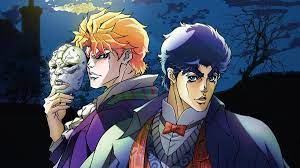
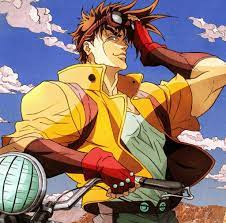
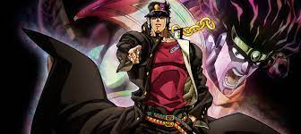
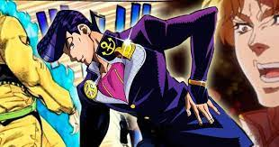
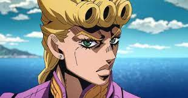

JoJo's Bizarre Adventure (As bizarras aventuras de JoJo) é um mangá japonês escrito por Hirohiko Araki. O mangá é publicado desde 1987 até os dias atuais, contando com 127 volumes.
O mangá conta a históra da família Joestar e suas lutas contra forças sobrenaturais. A história é dividida em partes, onde cada parte é dedicada a um descendente da família Joestar, por exemplo, a parte 2 é com o neto do protagonis da parte 1, e a parte 3 é com o neto do protagonista da parte 2. Todo descendente possui um nome que começa com "Jo" como Jonathan ou Joseph, e com o "Jo" de Joestar, formamos o apelido do protagonista "JoJo", logo cada parte possui um JoJo diferente.
O mangá recebeu uma adaptação em anime para as 2 primeiras partes que juntas formaram a primeira temporada, que estreou no dia 6 de outubro de 2012, produzida pelo estúdio Tokyo MX. Posteriormente, a série recebeu mais 3 tempoaradas em anime.
É ambientado na inglaterra por volta de 1880, por Jonathan Joestar, filho de um homem muito rico. Seu pai adota outro jovem (Dio) que era filho de um homem que o ajudou um dia. Na história Dio é movido pela ambição, e tudo o que quer é dinheiro, além de atormentar a vida de Jonathan. Dio, descobre uma misteriosa máscara de pedra, que lhe dá poderes de um vampiro. A principal característica de Joseph Joestar era ser cavalheiro, e proteger os outros acima de sua vida.
A história se passa 50 anos depois da morte de Jonathan Joestar, com seu neto Joseph Joestar. Ele é mais extrovertido que seu avô, e possui idéias mirabolantes e engraçadas, por ser bastante inteligente e estratégico. Os vilões dessa parte incluem vampiros, nazista e os Homens do Pilar, os criadores das máscaras de pedra que transformam humanos em vampiros.
Nessa parte temos o neto de Joseph Joestar como protagonista, Jotaro Kujo, que possui uma personalidade grosseira e séria, porém um bom coração. Nesse arco, temos o retorno de Dio da primeira parte, após 100 anos confinado em um caixão no fundo do mar. Nessa parte é introduzido o conceito de Stand, que basicamente é uma manifestação sobrenatural dos poderes psíquicos de uma pessoa. Cada Stand, possui habilidades únicas que são bastante criativas. Na história, a mãe de Jotaro, fica doente por causas sobrenaturais, e a única forma de cura-la é matando Dio. Desta forma, ocorre uma jornada épica de 50 dias, do japão até o egito, onde Dio está.
A história se passa com o filho ilegítimo de Joseph Joestar, Josuke Higashikata. Ele possui a habiliade de reconstruir objetos e curar feridas. O principal vilão desse arco é um assassino em série que pode transformar pessoas em bombas.
Seu protagonista é Giorno Giovanna, filho de Dio usando o corpo de Jonathan. Basicamente, a história se passa na itália onde uma máfia gerencia a cidade, e inclusive vendendo drogas para crianças. O protagonista, por possuir um forte senso de justiça, decide acabar com isso, e decide entrar na máfia. Por meio da ajuda de alguns companheiros, incia uma jornada épica para derrotar o lider da máfia.
A adaptação em anime conta ainda com ótimas aberturas tanto em termos de música, quanto em animação, algumas dela incluem: